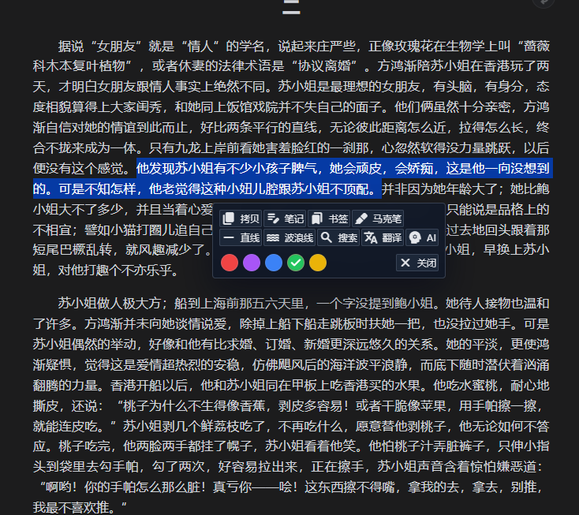

笔记与标注
在正文里选中文字，会弹出一个操作菜单。
菜单里的操作
| 操作 | 作用 |
|---|---|
| 拷贝 | 复制选中的文字 |
| 笔记 | 为选中的文字添加一条笔记 |
| 书签 | 把这段文字标为书签 |
| 马克笔 | 给文字加底色 |
| 直线 / 波浪线 | 在文字下方画线 |
| 搜索 | 用选中的文字在书内搜索 |
| 翻译 | 翻译选中的文字 |
| AI | 就选中的文字向 AI 提问 |

五种颜色
菜单下方一排是颜色：红、紫、蓝、绿、金。新建标注默认用哪一种，可以在阅读设置的「书签与标注」分区里改。
笔记
- 选中文字点「笔记」，在弹出框里写内容后保存。
- 笔记可以在书签面板里查看；预览方式（悬停或点击）可以在设置里改。
- 已有笔记可以再次打开修改或删除。
关闭弹出菜单
如果不想每次选中文字都弹出菜单，可以把「选区操作弹窗」设为「右键」或「关闭」。